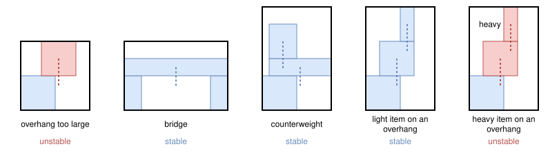
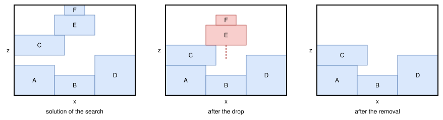

Static stability and maximum weight above¶
With the static stability constraint, the items of each bin must be in static mechanical equilibrium. With the maximum weights above, the items must not carry more than the maximum weights above of their item types. This page describes how they are checked, and how the tree search algorithms, which don’t model them, repair their solutions so that they satisfy them.
Feasibility criterion¶
The criterion is the static mechanical equilibrium of Galrão Ramos, Oliveira, Gonçalves and Lopes (2016). The items are rigid bodies whose only external force is their weight, applied at their center. An item is supported through the contacts between its bottom face and the floor of the bin or the top faces of the items whose top is at the height of its bottom. Each contact is a rectangle, the intersection of the two faces. Lateral contacts are not taken into account: an item leaning against another one is not supported.
Any pressure on a contact rectangle which only pushes is equivalent to non-negative vertical forces at its four corners. The items are in equilibrium if and only if there exist such forces for which the vertical forces and the moments about the horizontal axes through the center of each item are balanced. This is a linear program, without objective: the bin is stable if and only if it is feasible.
Unlike the rules which check the support of each item alone, the forces that an item transmits to the items below it are taken into account. Two such rules are common: a minimum supported fraction of the bottom face of each item, and the center of gravity of each item above the convex hull of its contacts. The examples below, seen from the beginning of the y-axis (the items span the whole bin along y), are scenarios of the tests. The dashed lines are below the centers of gravity of the items, and the items in red fall. The weight of an item is its volume, except for the heavy item:

Example |
Equilibrium |
Center of gravity above the contacts |
Supported fraction at least 50% |
|---|---|---|---|
overhang too large |
unstable |
unstable |
unstable |
bridge |
stable |
stable |
unstable |
counterweight |
stable |
unstable |
unstable |
light item on an overhang |
stable |
stable |
stable |
heavy item on an overhang |
unstable |
stable |
stable |
Overhang too large. The center of gravity of the top item is beyond its contact with the bottom item, which supports 40% of its bottom face: all the rules agree.
Bridge. The plank rests on two pillars which support a third of its bottom face. The supported fraction rule rejects it, while it is stable: its center of gravity is between the pillars.
Counterweight. The center of gravity of the plank is beyond its support, so both rules reject it. But the item on the end of the plank above the support balances it: the center of gravity of the plank and the item together is above the support.
Light and heavy item on an overhang. The middle item is stable on the bottom item, and the top item is stable on the middle item, so both rules accept both examples. But a heavy top item, whose center of gravity is beyond the support of the middle item, tips the middle item: only the equilibrium detects it.
The criterion is checked by Solution on each bin, for every solution, whichever algorithm built it. A solution with a bin which is not stable is not feasible.
The algorithms don’t model it, so they only prove an infeasibility, and only compute a bound from the value of a solution, with the constraints they model: the copies, the minimum copies and the resources (Solution::feasible_without_unmodeled_constraints).
Model¶
Input:
the items \(i = 1, \ldots, n\) of the bin; for each item \(i\): its weight \(w_i\), and the coordinates \((\bar{x}_i, \bar{y}_i)\) of its center in the horizontal plane
the contacts \(c\); for each contact \(c\): the item \(u(c)\) it supports, the item \(l(c)\) which supports it (none if \(u(c)\) is on the floor of the bin), and \(K(c)\) the four corners of its rectangle; for each corner \(k\): its coordinates \((x_k, y_k)\) in the horizontal plane
Variables:
\(f_k \ge 0\): vertical force at corner \(k\) of a contact; it pushes the item \(u(c)\) up and the item \(l(c)\) down
Objective: none
Constraints:
Vertical forces: for each item, the forces of the contacts below it minus the forces of the contacts above it equal its weight
Moments about the axis parallel to y through the center of the item
Moments about the axis parallel to x through the center of the item
The model has 4 variables per contact and 3 rows per item. The forces are divided by the largest weight of the items and the lever arms by the largest dimension of the bin, so that the coefficients are between -1 and 1. It is solved with HiGHS.
The linear program is not solved when all the items are on the floor of the bin (the bin is stable), or when an item with a weight has no support (the bin is not stable).
Maximum weight above¶
The weight that an item carries depends on how the items above it share their weights between their supports, which the same forces describe. The maximum weights above are satisfied if and only if there exist forces which satisfy the constraints of the equilibrium model and, for each item \(i\) whose item type has a maximum weight above \(W_i\):
Without the static stability, only the constraints of the vertical forces are kept, not the constraints of the moments: the weights flow down through the contacts, in any proportions. With the static stability, the three constraints of each item are kept, so a single force distribution must both balance the items and satisfy the maximum weights above. In both cases, each item with a weight must rest on the floor of the bin or on other items.
Since the forces aren’t unique, the check is optimistic: it accepts a bin if some force distribution satisfies the maximum weights above, while the actual forces also depend on the stiffness of the items.
The criterion is checked by Solution on the bins of the instances in which an item type has a maximum weight above (SolutionBin::maximum_weight_above_feasible), and is part of the feasibility of the solutions. Like the static stability, the algorithms don’t model it.
Repair of the solutions¶
The tree search algorithms often generate solutions with floating items, especially the tree search with maximal spaces, which places a block on the floor of a maximal space, while the space can extend beyond the items supporting it. Without repair, with this constraint, they may find no stable solution at all.
So, before passing a new solution to the algorithm formatter, tree search and tree search with maximal spaces repair it in two steps. Only the bins which are not stable, or which don’t satisfy the maximum weights above, are changed.
Drop. The items fall until they rest on the floor or on another item. They are processed in a single pass, from the lowest to the highest one: an item lands on the highest top face of the items already processed whose footprints intersect its footprint, or on the floor. The items which may stop an item are below it, so they are already at their final positions. The items only move down, and the items whose footprints intersect keep their vertical order, so the solution remains valid, with the same items in the same bins.
Removal of the unbalanced items. After the drop, no item floats, but an item may still tip, when its center of gravity is beyond its support, or because of the weight of the items above it, and an item may carry too much. While a bin is not stable, or doesn’t satisfy the maximum weights above:
the items which can’t be balanced are found by solving the equilibrium linear program in which each row may be violated, at a cost equal to the violation (see below); the items whose rows are violated in an optimal solution are the unbalanced items;
the highest of them is removed, with the items which rest on it, directly or not;
the other items keep their positions, so they remain supported.
In the example below, seen from the beginning of the y-axis (the items span the whole bin along y), the items C, E and F float in the solution of the search. After the drop, C rests on A, E on C and F on E. The center of gravity of E (dashed line) is beyond its contact with C, so E tips: it is removed, with F which rests on it:

The linear program which finds the unbalanced items has the input and the variables of the equilibrium model, the constraints of the maximum weights above (which may not be violated), and:
Variables, in addition:
\(s_{i,r}^+ \ge 0\), \(s_{i,r}^- \ge 0\): violations of the row \(r \in \{1, 2, 3\}\) of the equilibrium model for item \(i\) (vertical forces, moments about the axes parallel to y and to x), in both directions
Objective: minimize the violations
Constraints: the rows of the equilibrium model, with the violations; for the vertical forces, for example:
It always has a solution: the null forces, with the violations of the vertical forces equal to the weights. Its optimal value is zero if and only if the bin satisfies the constraints. With the maximum weights above, the items whose weight can’t be carried are unbalanced, so the items above an item which carries too much are removed first. An item \(i\) is unbalanced if \(\sum_r (s_{i,r}^+ + s_{i,r}^-) > 10^{-7}\) in the optimal solution found.
The removed items are not re-inserted. With the knapsack objective, the repaired solution is feasible. With the objectives which require all the items to be packed, it often isn’t.
The infeasibility proofs and the bounds of the tree searches are computed from the solution of the search, not from the repaired one, since the repair may remove items.
Source files¶
src/box/static_stability.hpp,src/box/static_stability.cpp: the equilibrium linear program, with the maximum weights above, the drop and the removal of the unbalanced itemssrc/box/solution.cpp: the check of the criteria on each binsrc/box/tree_search.cpp,src/box/tree_search_maximal_spaces.cpp: the calls to the repairscripts/doc_figures/box.py: the figure of this page
References:
“A container loading algorithm with static mechanical equilibrium stability constraints” (Galrão Ramos, Oliveira, Gonçalves and Lopes, 2016)
“Standing on a common ground: a comparison of static stability approaches for pallet loading” (Mazur, Gamer, Ramos and Schoder, 2027)